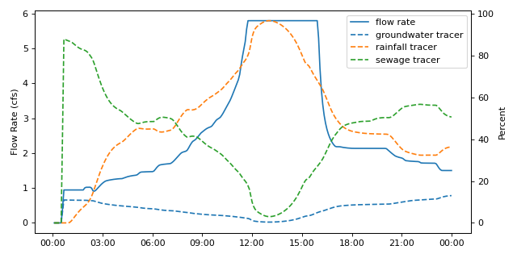

swmm.pandas.Output.link_series¶
- Output.link_series(link, attribute=('flow_rate', 'flow_velocity', 'flow_depth'), start=None, end=None, columns='attr', asframe=True)[source]¶
Get one or more time series for one or more link attributes. Specify series start index and end index to get desired time range.
- Parameters
- linkUnion[int, str, Sequence[Union[int, str]], None]
The link index or name.
- attributeUnion[int, str, Enum, Sequence[Union[int, str, Enum]], None]
The attribute index or name.
On of:
flow_rate, flow_depth, flow_velocity, flow_volume, capacity.
defaults to: (‘flow_rate’,’flow_velocity’,’flow_depth’)
Can also input the integer index of the attribute you would like to pull or the actual enum from output.link_attributes.
Setting to None indicates all attributes.
- start_indexUnion[str,int, datetime, None], optional
The start datetime or index of from which to return series, defaults to None.
Setting to None indicates simulation start.
- end_indexUnion[str,int, datetime, None], optional
The end datetime or index of from which to return series, defaults to None.
Setting to None indicates simulation end.
- columns: Optional[str], optional
Decide whether or not to break out elements or attributes as columns. May be one of:
None : Return long-form data with one column for each data point
‘elem’ : Return data with a column for each element. If more than one attribute are given, attribute names are added to the index.
‘attr’ : Return data with a column for each attribute. If more than one element are given, element names are added to the index.
defaults to ‘attr’.
- asframe: bool
A switch to return an indexed DataFrame. Set to False to get an array of values only, defaults to True.
- Returns
- Union[pd.DataFrame,np.ndarray]
A DataFrame or ndarray of attribute values in each column for requested date range and links.
Examples
Pull flow rate for two conduits
>>> from swmm.pandas import Output,test_out_path >>> out = Output(test_out_path) >>> out.link_series(['COND1','COND6'],out.link_attributes.FLOW_RATE,columns='elem') COND1 COND6 datetime 1900-01-01 00:05:00 0.000031 0.0000 1900-01-01 00:10:00 0.000280 0.0000 1900-01-01 00:15:00 0.000820 0.0000 1900-01-01 00:20:00 0.001660 0.0000 1900-01-01 00:25:00 0.002694 0.0000 ... ... ... 1900-01-01 23:40:00 0.037800 1.5028 1900-01-01 23:45:00 0.037800 1.5028 1900-01-01 23:50:00 0.037800 1.5028 1900-01-01 23:55:00 0.037800 1.5028 1900-01-02 00:00:00 0.037800 1.5028 [288 rows x 2 columns]
Pull a wide-form dataframe for all parameters for a link
>>> out.node_series('COND1', out.link_attributes) flow_rate flow_depth flow_velocity flow_volume capacity groundwater pol_rainfall sewage datetime 1900-01-01 00:05:00 0.000031 0.053857 0.001116 23.910770 0.024351 79.488449 0.000000 0.000000e+00 1900-01-01 00:10:00 0.000280 0.134876 0.004258 76.354103 0.080857 93.174545 0.000000 0.000000e+00 1900-01-01 00:15:00 0.000820 0.165356 0.009518 99.407425 0.108456 91.125893 0.000000 0.000000e+00 1900-01-01 00:20:00 0.001660 0.188868 0.016023 117.895081 0.131204 88.518318 0.000000 0.000000e+00 1900-01-01 00:25:00 0.002694 0.206378 0.022971 131.773941 0.148936 86.187752 0.000000 0.000000e+00 ... ... ... ... ... ... ... ... ... 1900-01-01 23:40:00 0.037800 0.312581 0.180144 212.443344 0.267168 31.683731 68.344780 6.173063e-08 1900-01-01 23:45:00 0.037800 0.312581 0.180144 212.443344 0.267168 31.788561 68.242958 5.872794e-08 1900-01-01 23:50:00 0.037800 0.312581 0.180144 212.443344 0.267168 31.890982 68.144737 5.583060e-08 1900-01-01 23:55:00 0.037800 0.312581 0.180144 212.443344 0.267168 31.988274 68.052620 5.311425e-08 1900-01-02 00:00:00 0.037800 0.312581 0.180144 212.443344 0.267168 32.083355 67.963829 5.049533e-08
[288 rows x 8 columns]
Pull a long-form dataframe of all links and attributes
>>> out.node_series(out.links, out.link_attributes, columns=None) flow_rate flow_depth flow_velocity flow_volume capacity groundwater pol_rainfall sewage datetime element 1900-01-01 00:05:00 COND1 0.000031 0.053857 0.001116 23.910770 0.024351 79.488449 0.000000 0.00000 1900-01-01 00:10:00 COND1 0.000280 0.134876 0.004258 76.354103 0.080857 93.174545 0.000000 0.00000 1900-01-01 00:15:00 COND1 0.000820 0.165356 0.009518 99.407425 0.108456 91.125893 0.000000 0.00000 1900-01-01 00:20:00 COND1 0.001660 0.188868 0.016023 117.895081 0.131204 88.518318 0.000000 0.00000 1900-01-01 00:25:00 COND1 0.002694 0.206378 0.022971 131.773941 0.148936 86.187752 0.000000 0.00000 ... ... ... ... ... ... ... ... ... 1900-01-01 23:40:00 WR1 0.000000 0.000000 0.000000 0.000000 1.000000 15.293419 39.303375 45.43092 1900-01-01 23:45:00 WR1 0.000000 0.000000 0.000000 0.000000 1.000000 15.313400 39.292118 45.43092 1900-01-01 23:50:00 WR1 0.000000 0.000000 0.000000 0.000000 1.000000 15.333243 39.281300 45.43092 1900-01-01 23:55:00 WR1 0.000000 0.000000 0.000000 0.000000 1.000000 15.352408 39.271194 45.43092 1900-01-02 00:00:00 WR1 0.000000 0.000000 0.000000 0.000000 1.000000 15.371475 39.261478 45.43092 [2304 rows x 8 columns]
Pull flow timeseries and pollutant tracer concentrations for a link and plot
import matplotlib.pyplot as plt import matplotlib.dates as mdates from swmm.pandas import Output,test_out_path out = Output(test_out_path) df = out.link_series('COND6',['flow_rate','groundwater','pol_rainfall','sewage']) # set up figure fig,ax = plt.subplots(figsize=(8,4)) # plot flow rate on primary yaxis ax.plot(df.flow_rate,label="flow rate") # plot pollutant concentrations on secondary axis # rainfall, DWF, and groundwater were given 100 mg/L pollutant # concentrations to serve as tracers ax1 = ax.twinx() ax1.plot(df.groundwater,ls = '--',label="groundwater tracer") ax1.plot(df.pol_rainfall,ls = '--',label="rainfall tracer") ax1.plot(df.sewage,ls = '--',label="sewage tracer") # style axes ax.set_ylabel("Flow Rate (cfs)") ax.xaxis.set_major_formatter(mdates.DateFormatter("%H:%M")) ax1.set_ylabel("Percent") # add legend and show figure fig.legend(bbox_to_anchor=(1,1),bbox_transform=ax.transAxes) fig.tight_layout() fig.show()
